Capitolo 6Chapter 6
Ulteriori sviluppi della TeoriaFurther Developments of the Theory
Nella scheda quattro abbiamo introdotto l’equazione di Schrödinger per una particella carica in un potenziale elettrico. Questa equazione ci permette di determinare 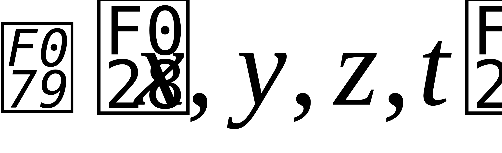 . Lo scopo centrale della presente scheda sarà quello di determinare la distribuzione di ampiezze di probabilità per altre grandezze osservabili, in particolare per la quantità di moto, per il momento angolare e per l’energia.In card four we introduced the Schrödinger equation for a charged particle in an electric potential. This equation allows us to determine , that is the distribution of probability amplitudes as a function of time for the triple of measurable quantities . The central aim of the present card will be to determine the distribution of probability amplitudes for other observable quantities, in particular for momentum, angular momentum and energy.
. Lo scopo centrale della presente scheda sarà quello di determinare la distribuzione di ampiezze di probabilità per altre grandezze osservabili, in particolare per la quantità di moto, per il momento angolare e per l’energia.In card four we introduced the Schrödinger equation for a charged particle in an electric potential. This equation allows us to determine , that is the distribution of probability amplitudes as a function of time for the triple of measurable quantities . The central aim of the present card will be to determine the distribution of probability amplitudes for other observable quantities, in particular for momentum, angular momentum and energy.
Per raggiungere lo scopo è necessario rivedere e generalizzare i principi della Meccanica Quantistica che abbiamo postulato nella scheda due.To achieve this aim it is necessary to review and generalise the principles of Quantum Mechanics that we postulated in card two.
Principi della Meccanica Quantistica.Principles of Quantum Mechanics.
Per comodità di lettura riportiamo qui i principi che abbiamo postulato nella scheda due:For ease of reading we restate here the principles we postulated in card two:
Un sistema fisico è caratterizzato dalle sue grandezze fisiche che possono essere misurate.A physical system is characterised by its physical quantities, which can be measured.
Quando si misura una grandezza g sono possibili diversi risultati, ed ogni risultato ha una certa probabilità di uscire. Se dalla misura si ottiene un particolare risultato 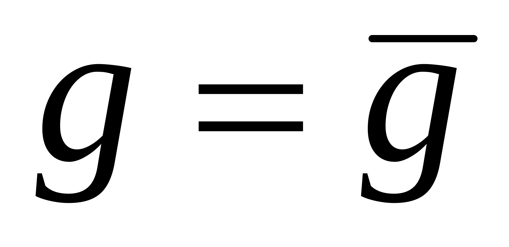 . Un tale stato viene detto autostato di g con autovalore
. Un tale stato viene detto autostato di g con autovalore  .When a quantity g is measured, several outcomes are possible, and each outcome has a certain probability of occurring. If the measurement gives a particular result , the system settles into a state such that, if the measurement of g is repeated, the value is obtained with certainty. Such a state is called an eigenstate of g with eigenvalue .
.When a quantity g is measured, several outcomes are possible, and each outcome has a certain probability of occurring. If the measurement gives a particular result , the system settles into a state such that, if the measurement of g is repeated, the value is obtained with certainty. Such a state is called an eigenstate of g with eigenvalue .
Un qualsiasi altro stato α può essere considerato come una sovrapposizione degli autostati di una grandezza g e può essere rappresentato da un vettore di numeri complessi 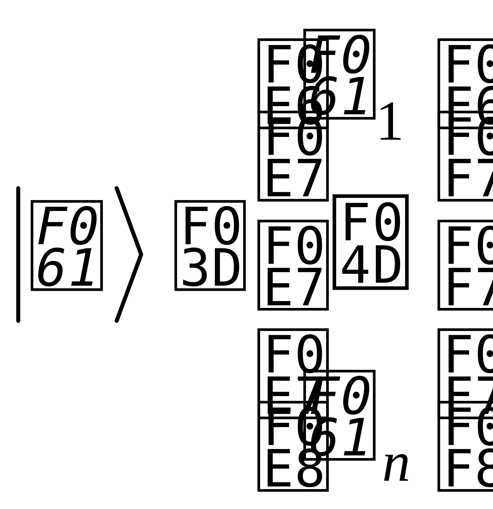 associato al numero considerato.Any other state α can be considered as a superposition of the eigenstates of a quantity g and can be represented by a vector of complex numbers . Each complex number is associated with one of the possible values that the quantity g can take, The squared modulus of each of these complex numbers, for example αk, gives the probability that measuring the quantity g yields the particular value associated with the number considered.
associato al numero considerato.Any other state α can be considered as a superposition of the eigenstates of a quantity g and can be represented by a vector of complex numbers . Each complex number is associated with one of the possible values that the quantity g can take, The squared modulus of each of these complex numbers, for example αk, gives the probability that measuring the quantity g yields the particular value associated with the number considered.
In generale se il sistema si trova in uno stato α e si misura una grandezza 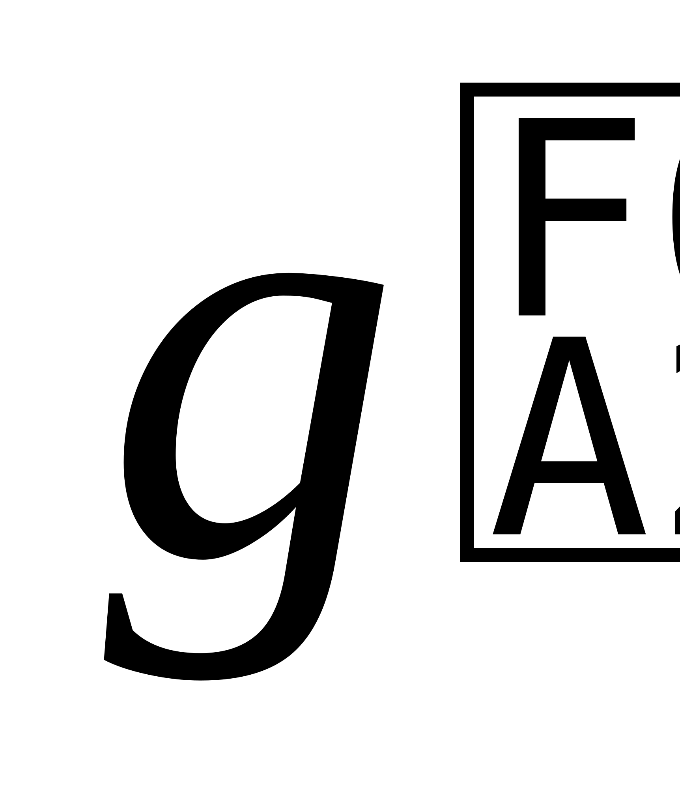 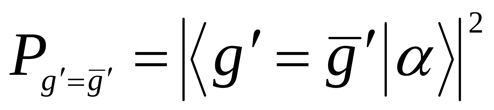 , la probabilità che esca
, la probabilità che esca  è data dal modulo quadro del prodotto scalare tra il vettore
è data dal modulo quadro del prodotto scalare tra il vettore  ed il vettore
ed il vettore  associato all’autostato
associato all’autostato  di is measured, the probability that occurs is given by the squared modulus of the scalar product between the vector and the vector associated with the eigenstate of .
di is measured, the probability that occurs is given by the squared modulus of the scalar product between the vector and the vector associated with the eigenstate of .
L’evoluzione nel tempo di uno stato αt segue una legge lineare  The time evolution of a state αt follows a linear law
The time evolution of a state αt follows a linear law
dove  è una matrice che dipende dal sistema e dalle “condizioni ambientali”. La matrice
è una matrice che dipende dal sistema e dalle “condizioni ambientali”. La matrice  è detta matrice di evoluzione temporale e gode della proprietà di lasciare invariati i prodotti scalari
è detta matrice di evoluzione temporale e gode della proprietà di lasciare invariati i prodotti scalari  where is a matrix that depends on the system and on the “ambient conditions”. The matrix is called the time-evolution matrix and has the property of leaving scalar products invariant
where is a matrix that depends on the system and on the “ambient conditions”. The matrix is called the time-evolution matrix and has the property of leaving scalar products invariant
Nel secondo principio si introduce il concetto di autostato cioè di uno stato tale che se si esegue una misura si ottiene con certezza un dato valore detto autovalore. Nel caso di una particella materiale gli autostati ad esempio della grandezza x sono quelli rappresentati da vettori del tipoIn the second principle the concept of eigenstate is introduced, that is a state such that if a measurement is performed a given value, called the eigenvalue, is obtained with certainty. In the case of a material particle the eigenstates, for example of the quantity x, are those represented by vectors of the form
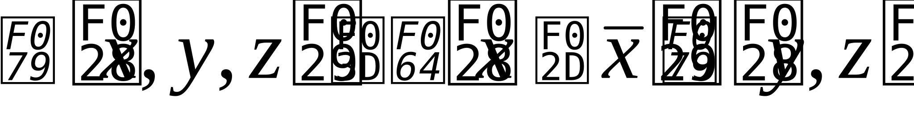
infatti con questo vettore si ottiene una distribuzione di probabilità che è nulla se 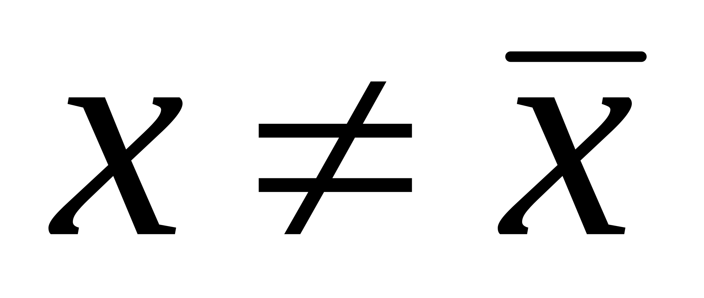 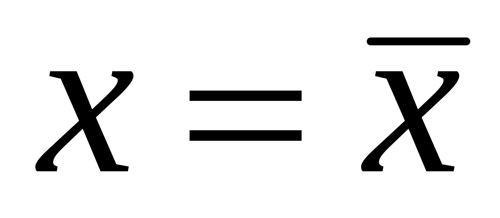 . Un altro esempio è dato dallo stato rappresentato dal vettoreindeed with this vector one obtains a probability distribution that is zero if , and is non-zero only if , so when a measurement of x is performed the value will necessarily be obtained. Another example is given by the state represented by the vector
. Un altro esempio è dato dallo stato rappresentato dal vettoreindeed with this vector one obtains a probability distribution that is zero if , and is non-zero only if , so when a measurement of x is performed the value will necessarily be obtained. Another example is given by the state represented by the vector

in questo caso se si esegue una misura di x, di y o di z, si otterranno con certezza i valori 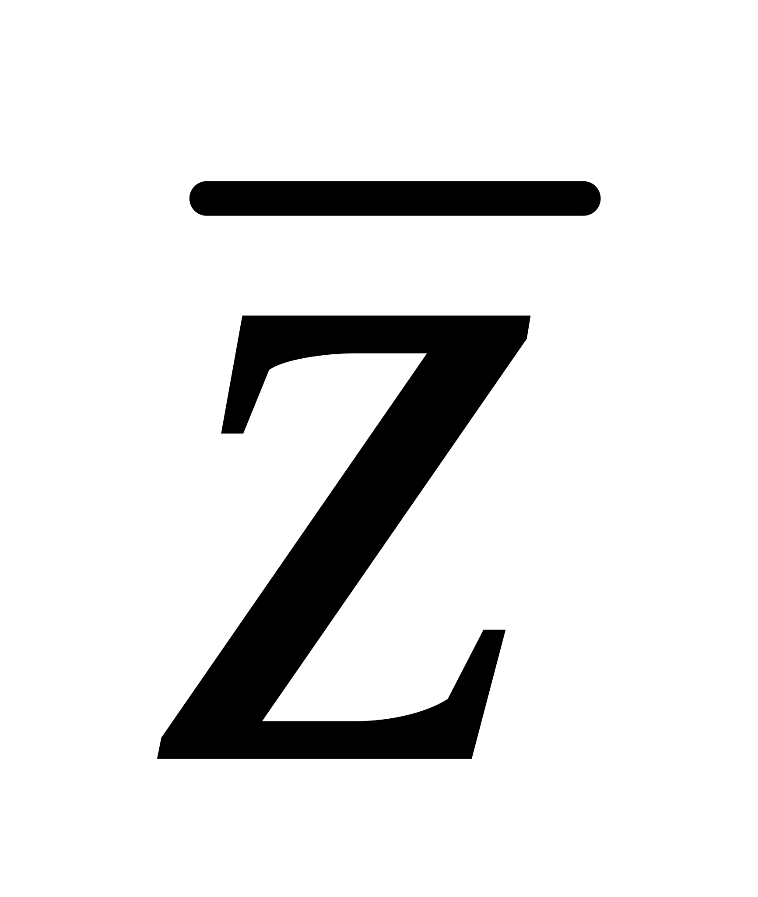 ,
, e , and will be obtained with certainty; so what we have considered is simultaneously an eigenstate of the quantities x, y and z.
e , and will be obtained with certainty; so what we have considered is simultaneously an eigenstate of the quantities x, y and z.
I principi che abbiamo dato in realtà sono una versione semplificata, perché si suppone che dato un valore  l’autostato associato a
l’autostato associato a  sia unico, il ché in generale non è vero; ad esempio nel caso di una particella materiale nello spazio tridimensionale gli autostati associati ad un autovalore
sia unico, il ché in generale non è vero; ad esempio nel caso di una particella materiale nello spazio tridimensionale gli autostati associati ad un autovalore  di x sono infiniti:The principles we have given are in fact a simplified version, because it is assumed that, given a value , the eigenstate associated with is unique, which in general is not true; for example in the case of a material particle in three-dimensional space the eigenstates associated with an eigenvalue of x are infinite:
di x sono infiniti:The principles we have given are in fact a simplified version, because it is assumed that, given a value , the eigenstate associated with is unique, which in general is not true; for example in the case of a material particle in three-dimensional space the eigenstates associated with an eigenvalue of x are infinite:

Quindi non possiamo parlare dello stato  , perché non è uno solo, ma possiamo parlare dello stato
, perché non è uno solo, ma possiamo parlare dello stato  , infatti questo stato è univocamente determinato e la relativa distribuzione di probabilità èTherefore we cannot speak of the state , because it is not unique, but we can speak of the state ; indeed this state is uniquely determined and the corresponding probability distribution is
, infatti questo stato è univocamente determinato e la relativa distribuzione di probabilità èTherefore we cannot speak of the state , because it is not unique, but we can speak of the state ; indeed this state is uniquely determined and the corresponding probability distribution is

Il terzo principio si deve generalizzare dicendo che un qualsiasi stato può essere considerato come la sovrapposizione degli “autostati simultanei” di un certo set di grandezze fisiche 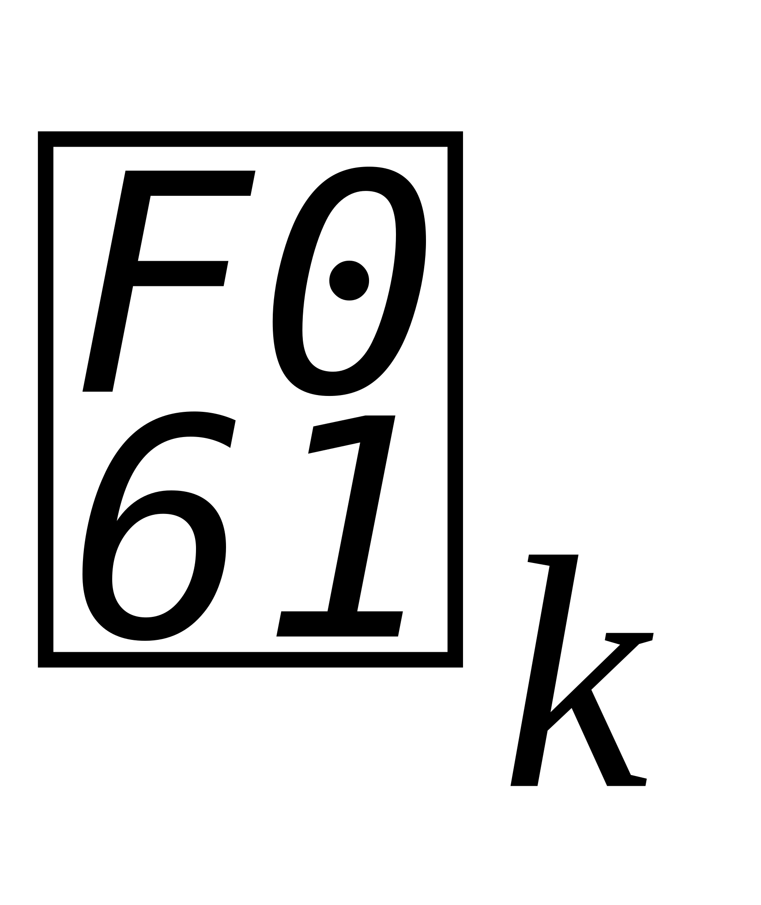 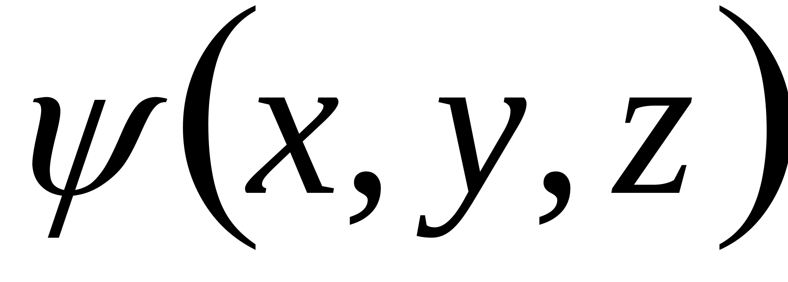 . I coefficienti di questa sovrapposizione non avranno più un solo indice ma ne avranno tanti quante sono le grandezze osservabili delle quali si prendono gli autostati, quindi non avremo
. I coefficienti di questa sovrapposizione non avranno più un solo indice ma ne avranno tanti quante sono le grandezze osservabili delle quali si prendono gli autostati, quindi non avremo  ma avremo . The coefficients of this superposition will no longer have a single index but as many as there are observable quantities whose eigenstates are taken, so we will not have but , or in the continuous case we will not have but .
ma avremo . The coefficients of this superposition will no longer have a single index but as many as there are observable quantities whose eigenstates are taken, so we will not have but , or in the continuous case we will not have but .
Un set di grandezze fisiche 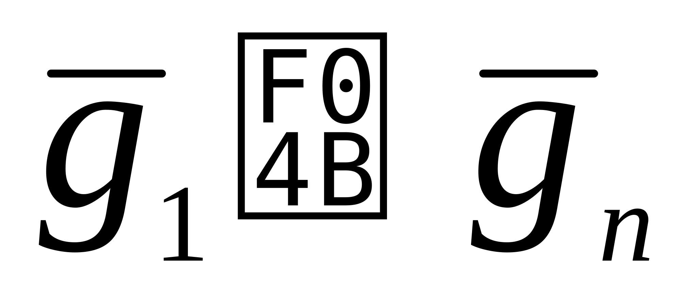 tale che esiste un unico autostato simultaneo associato agli autovalori
tale che esiste un unico autostato simultaneo associato agli autovalori  , esiste un unico autostato simultaneo associato a questa terna.A set of physical quantities such that there exists a unique simultaneous eigenstate associated with the eigenvalues will be called “complete”. For example the three position variables x, y and z form a complete set, because given a triple of values , there exists a unique simultaneous eigenstate associated with this triple.
, esiste un unico autostato simultaneo associato a questa terna.A set of physical quantities such that there exists a unique simultaneous eigenstate associated with the eigenvalues will be called “complete”. For example the three position variables x, y and z form a complete set, because given a triple of values , there exists a unique simultaneous eigenstate associated with this triple.
Il ket associato allo stato  potrà essere indicato con il simboloThe ket associated with the state may be denoted by the symbol
potrà essere indicato con il simboloThe ket associated with the state may be denoted by the symbol

tuttavia preferiremo fare un abuso di notazione e usare una notazione più compatta indicando il ket con il simbolo 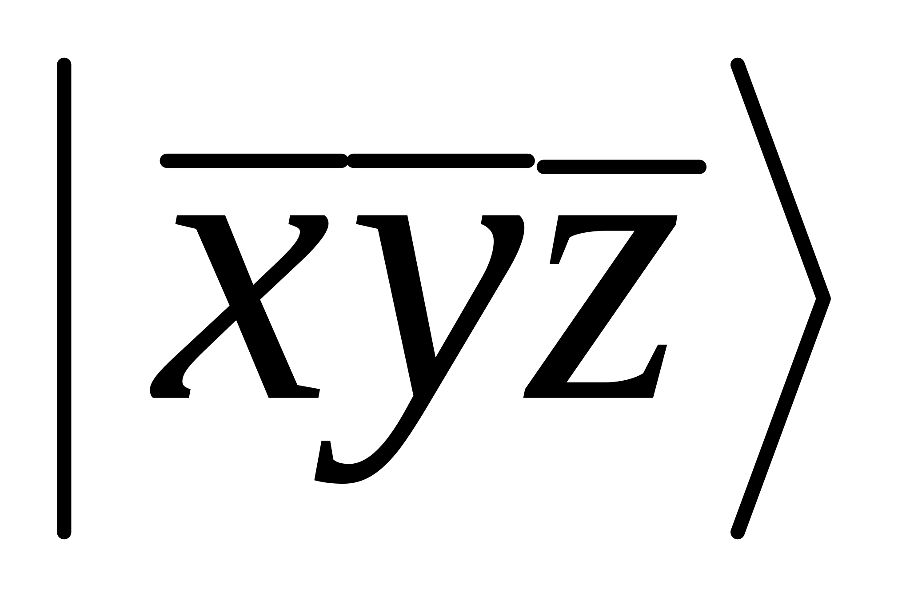 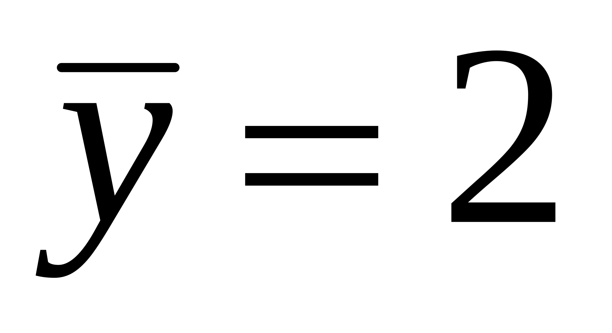 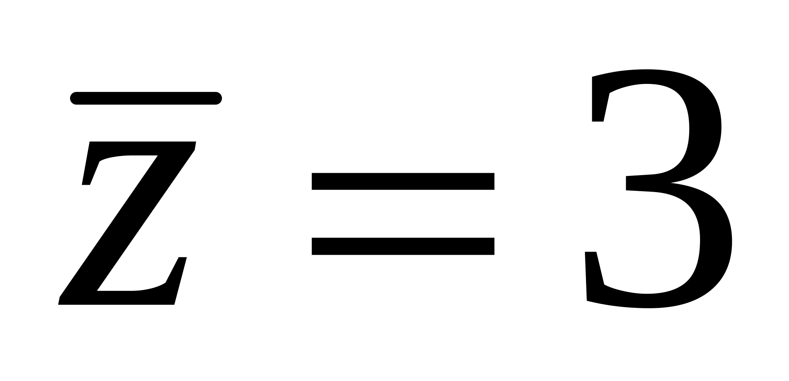 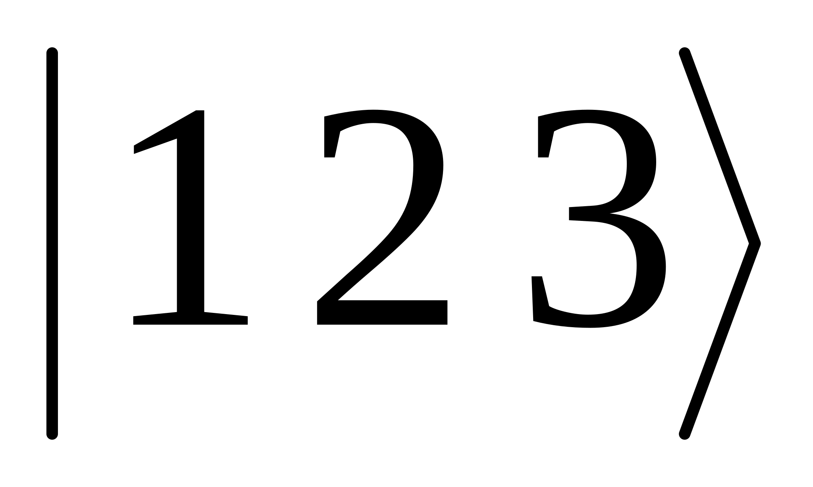 , , and , we would have the symbol in which values are indicated but the corresponding quantities are not.)
, , and , we would have the symbol in which values are indicated but the corresponding quantities are not.)
Ora consideriamo il quarto principio e supponiamo ad esempio di voler calcolare l’ampiezza di probabilità che, misurando x, y e z contemporaneamente su una particella in uno stato 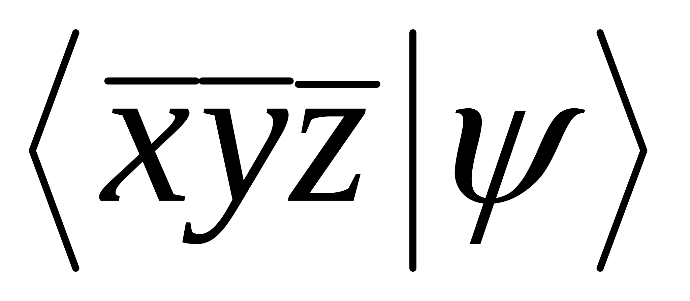 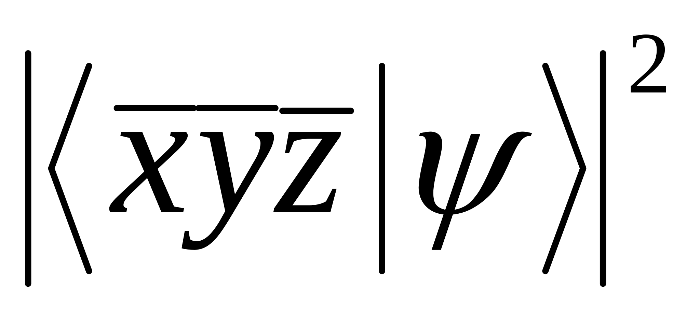 , vengano i valori
, vengano i valori  ; allora l’ampiezza di probabilità cercata è data dal prodotto scalare , the values are obtained; then the sought probability amplitude is given by the scalar product and the probability is given by the squared modulus .
; allora l’ampiezza di probabilità cercata è data dal prodotto scalare , the values are obtained; then the sought probability amplitude is given by the scalar product and the probability is given by the squared modulus .
Ma se vogliamo la probabilità che misurando solo x venga 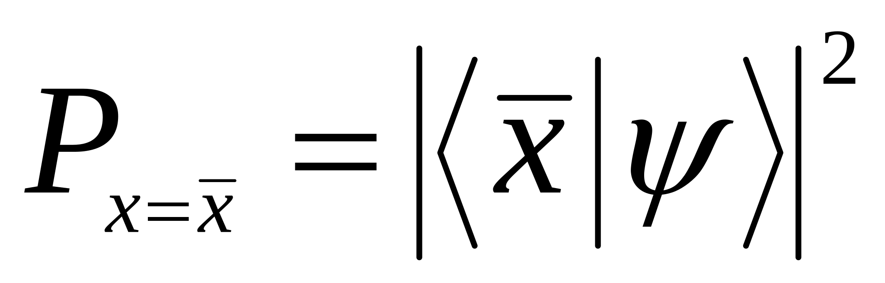 ? Possiamo scrivere is obtained? Can we write ?
? Possiamo scrivere is obtained? Can we write ?
No, perché il simbolo 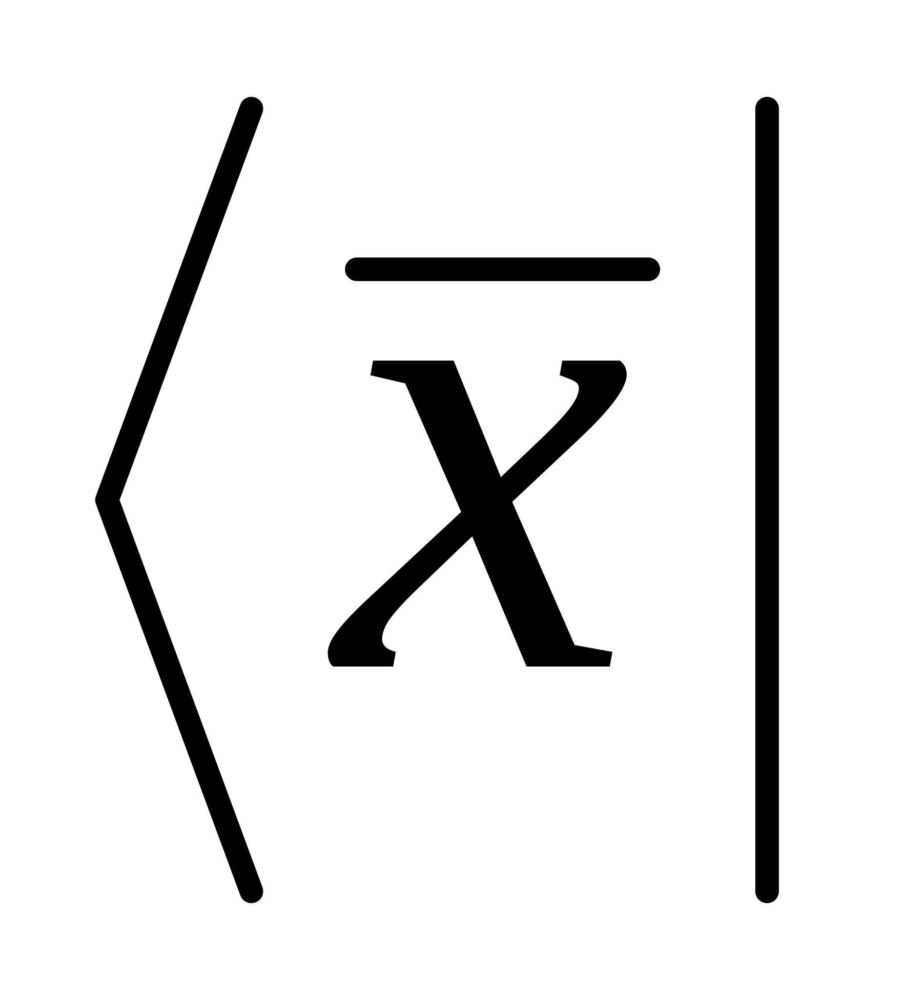 non identifica un unico autostato.No, because the symbol has no meaning; indeed the eigenvalue does not identify a unique eigenstate.
non identifica un unico autostato.No, because the symbol has no meaning; indeed the eigenvalue does not identify a unique eigenstate.
Se vogliamo la probabilità che misurando solo x venga  allora dobbiamo prima calcolare la probabilitàIf we want the probability that, measuring only x, is obtained, then we must first compute the probability
allora dobbiamo prima calcolare la probabilitàIf we want the probability that, measuring only x, is obtained, then we must first compute the probability

e poi calcolare l’integraleand then compute the integral
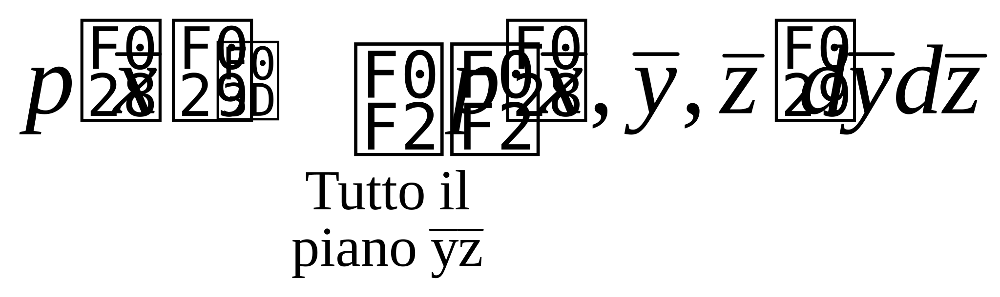
A questo punto scriviamo i principi generalizzatiAt this point we write the generalised principles
Un sistema fisico è caratterizzato dalle sue grandezze fisiche che possono essere misurate.A physical system is characterised by its physical quantities, which can be measured.
Quando si misura una grandezza g sono possibili diversi risultati, ed ogni risultato ha una certa probabilità di uscire. Se dalla misura si ottiene un particolare risultato  , il sistema si porta in uno stato tale che, se si ripete la misura di g si ottiene con certezza il valore
, il sistema si porta in uno stato tale che, se si ripete la misura di g si ottiene con certezza il valore  . Un tale stato viene detto autostato di g con autovalore
. Un tale stato viene detto autostato di g con autovalore  .When a quantity g is measured, several outcomes are possible, and each outcome has a certain probability of occurring. If the measurement gives a particular result , the system settles into a state such that, if the measurement of g is repeated, the value is obtained with certainty. Such a state is called an eigenstate of g with eigenvalue .
.When a quantity g is measured, several outcomes are possible, and each outcome has a certain probability of occurring. If the measurement gives a particular result , the system settles into a state such that, if the measurement of g is repeated, the value is obtained with certainty. Such a state is called an eigenstate of g with eigenvalue .
2.bis In generale dato un valore 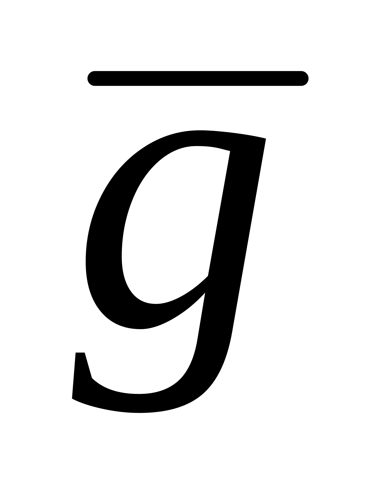 , tale che, dati gli n valori
, tale che, dati gli n valori  , esiste un unico autostato simultaneo associato a questi valori.2.bis In general, given a value , there may exist infinitely many eigenstates associated with this value. However it is always possible to find a complete set of variables such that, given the n values , there exists a unique simultaneous eigenstate associated with these values.
, esiste un unico autostato simultaneo associato a questi valori.2.bis In general, given a value , there may exist infinitely many eigenstates associated with this value. However it is always possible to find a complete set of variables such that, given the n values , there exists a unique simultaneous eigenstate associated with these values.
Un qualsiasi altro stato α può essere considerato come una sovrapposizione degli autostati simultanei di un set di grandezze 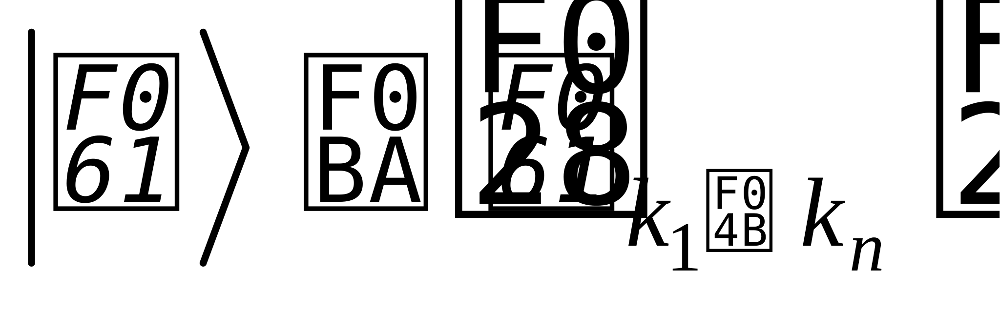 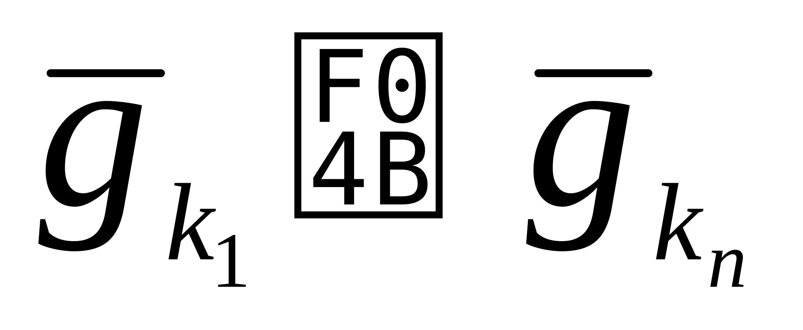 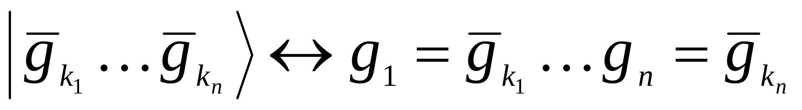 , e può essere rappresentato da un vettore di numeri complessi con n indici
, e può essere rappresentato da un vettore di numeri complessi con n indici  . Il modulo quadrato di ogni uno di questi numeri complessi, ad esempio
. Il modulo quadrato di ogni uno di questi numeri complessi, ad esempio  , dà la probabilità che misurando contemporaneamente le grandezze escano il particolare set di valori , and can be represented by a vector of complex numbers with n indices . Each complex number is associated with one of the possible combinations of values that the n-tuple of quantities can take. The squared modulus of each of these complex numbers, for example , gives the probability that measuring the quantities simultaneously yields the particular set of values and that the system settles into the simultaneous eigenstate .
, dà la probabilità che misurando contemporaneamente le grandezze escano il particolare set di valori , and can be represented by a vector of complex numbers with n indices . Each complex number is associated with one of the possible combinations of values that the n-tuple of quantities can take. The squared modulus of each of these complex numbers, for example , gives the probability that measuring the quantities simultaneously yields the particular set of values and that the system settles into the simultaneous eigenstate .
In generale se il sistema si trova in uno stato α e si misura contemporaneamente un set completo di grandezze 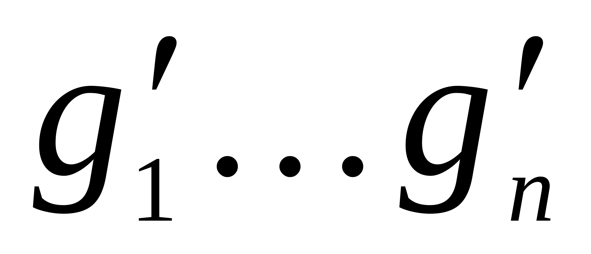 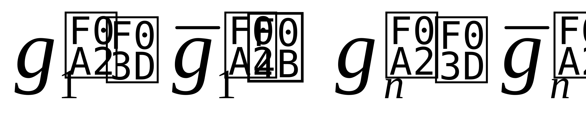 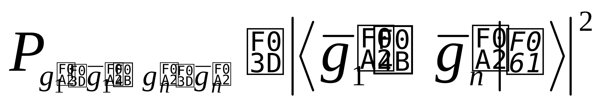 è data dal modulo quadro del prodotto scalare tra il vettore
è data dal modulo quadro del prodotto scalare tra il vettore  ed il vettore
ed il vettore  associato all’autostato simultaneo is given by the squared modulus of the scalar product between the vector and the vector associated with the simultaneous eigenstate . That is .
associato all’autostato simultaneo is given by the squared modulus of the scalar product between the vector and the vector associated with the simultaneous eigenstate . That is .
L’evoluzione nel tempo di uno stato αt segue una legge lineare 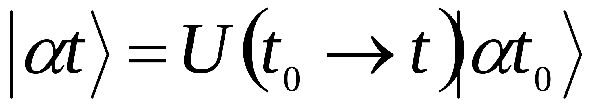
dove 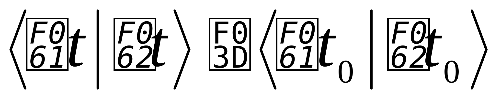 è una matrice che dipende dal sistema e dalle “condizioni ambientali”. La matrice
è una matrice che dipende dal sistema e dalle “condizioni ambientali”. La matrice  è detta matrice di evoluzione temporale e gode della proprietà di lasciare invariati i prodotti scalari is a matrix that depends on the system and on the “ambient conditions”. The matrix is called the time-evolution matrix and has the property of leaving scalar products invariant
è detta matrice di evoluzione temporale e gode della proprietà di lasciare invariati i prodotti scalari is a matrix that depends on the system and on the “ambient conditions”. The matrix is called the time-evolution matrix and has the property of leaving scalar products invariant
La generalizzazione di questi principi al caso continuo è immediata, basta sostituire alla rappresentazione indiciale 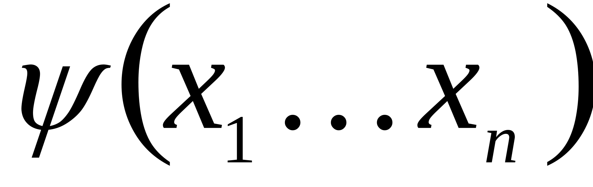 la rappresentazione funzionale with the functional representation .
la rappresentazione funzionale with the functional representation .
Osserviamo che due ket 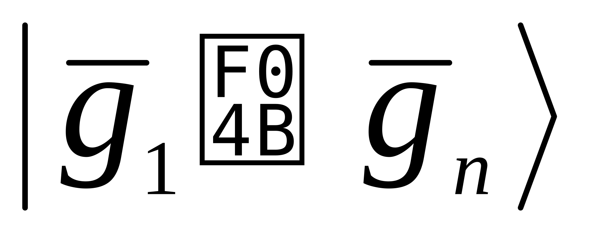 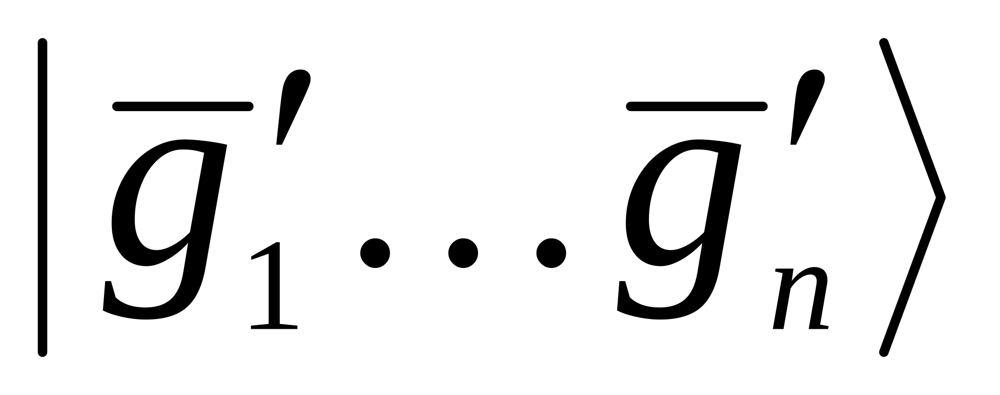 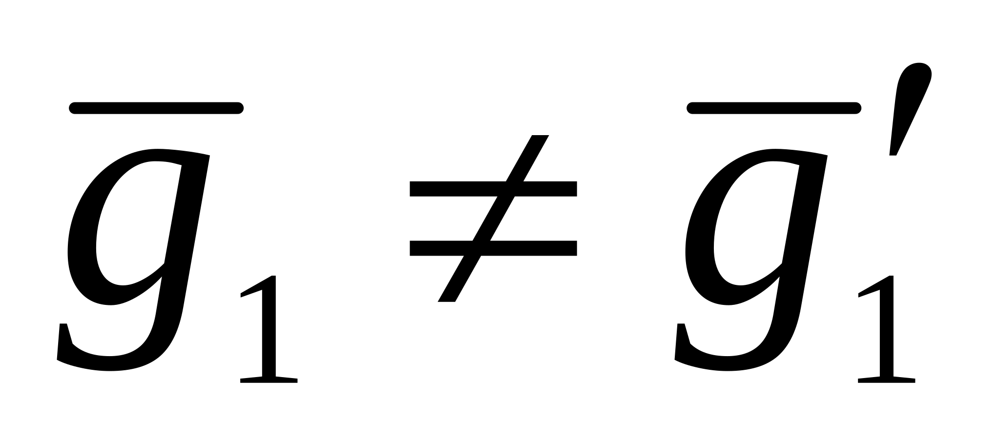 è zero, dunque:We observe that two kets and are orthogonal, unless they have all values equal . Indeed, if we suppose that one of the values, for example the first, is different , then the probability of obtaining the values in the state is zero, hence:
è zero, dunque:We observe that two kets and are orthogonal, unless they have all values equal . Indeed, if we suppose that one of the values, for example the first, is different , then the probability of obtaining the values in the state is zero, hence:
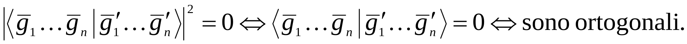
Se i ket 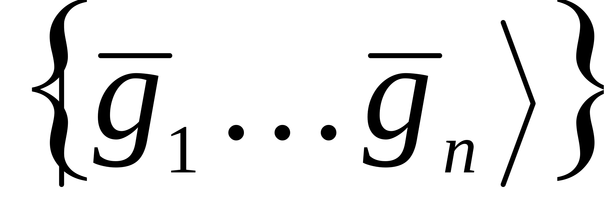 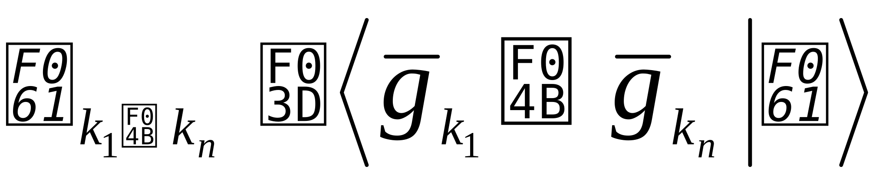 oltre ad essere ortogonali sono anche normalizzati, allora le componenti di un generico ket
oltre ad essere ortogonali sono anche normalizzati, allora le componenti di un generico ket  nella base , besides being orthogonal, are also normalised, then the components of a generic ket in the basis can be written with the scalar product , so we will have
nella base , besides being orthogonal, are also normalised, then the components of a generic ket in the basis can be written with the scalar product , so we will have
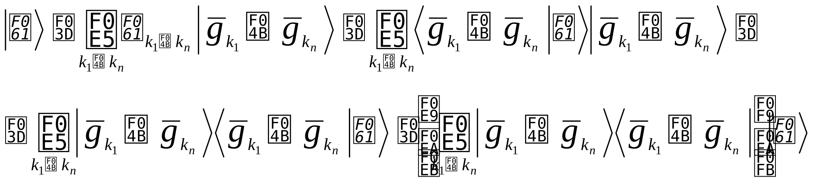
Queste identità devono essere vere per ogni scelta del ket  , quindi possiamo dedurre la formulaThese identities must hold for every choice of the ket , so we can deduce the formula
, quindi possiamo dedurre la formulaThese identities must hold for every choice of the ket , so we can deduce the formula

dove con I abbiamo indicato la matrice identità. Questa formula ci sarà utilissima in molte occasioni future.where by I we have denoted the identity matrix. This formula will be extremely useful on many future occasions.
Ora supponiamo di voler calcolare la distribuzione di ampiezze di probabilità associata ad altre grandezze fisiche diverse dalla posizione, ad esempio la quantità di moto . (D’ora in avanti con i simboli sopralineati indicheremo le grandezze vettoriali).Now suppose we want to compute the distribution of probability amplitudes associated with physical quantities other than position, for example momentum . (From now on, symbols with an overbar will denote vector quantities.)
Ampiezze di probabilità per la quantità di moto.Probability amplitudes for momentum.
Se conosciamo lo stato di una particella materiale, e conosciamo la distribuzione di ampiezze di probabilità per la variabile posizione  , come possiamo determinare la distribuzione di ampiezze di probabilità per la grandezza quantità di moto?If we know the state of a material particle, and we know the distribution of probability amplitudes for the position variable , how can we determine the distribution of probability amplitudes for the quantity momentum?
, come possiamo determinare la distribuzione di ampiezze di probabilità per la grandezza quantità di moto?If we know the state of a material particle, and we know the distribution of probability amplitudes for the position variable , how can we determine the distribution of probability amplitudes for the quantity momentum?
Se conoscessimo gli autostati della quantità di moto allora potremmo applicare il quarto postulato, ma questi autostati non li conosciamo e li dobbiamo determinare.If we knew the eigenstates of momentum then we could apply the fourth postulate, but we do not know these eigenstates and we must determine them.
Per trovare la soluzione al nostro problema dobbiamo prendere l’altro capo della matassa, cioè supponiamo di conoscere quali siano gli autostati della quantità di moto, e da questi cerchiamo di calcolare un valore che già conosciamo per altra via, così potremo avere un legame tra le cose che sappiamo e quelle che non abbiamo ancora determinato.To find the solution to our problem we must take the other end of the thread, that is we suppose we know what the eigenstates of momentum are, and from these we try to compute a value that we already know by another route, so that we can have a link between the things we know and those we have not yet determined.
Supponiamo ad esempio di voler calcolare il valore medio della componente lungo x della quantità di moto 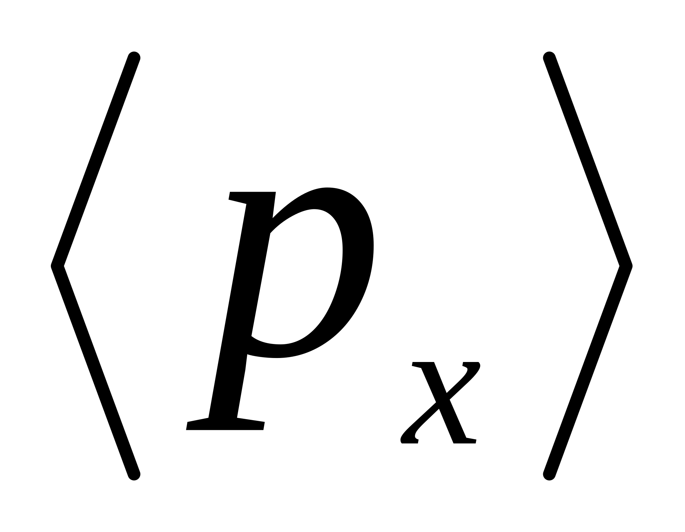
Per mantenere la generalità non possiamo ipotizzare che la grandezza  da sola costituisca un set completo, quindi per “completare il set” introduciamo un insieme di grandezze ausiliarie che indicheremo brevemente con un unico simbolo contratto
da sola costituisca un set completo, quindi per “completare il set” introduciamo un insieme di grandezze ausiliarie che indicheremo brevemente con un unico simbolo contratto  . Per rappresentare un autostato associato ad un autovalore
. Per rappresentare un autostato associato ad un autovalore  useremo il ket , dove
useremo il ket , dove  è un multiindice relativo all’insieme delle grandezze ausiliarie
è un multiindice relativo all’insieme delle grandezze ausiliarie  .To keep generality we cannot assume that the quantity by itself constitutes a complete set, so to “complete the set” we introduce a set of auxiliary quantities that we will denote briefly by a single contracted symbol . To represent an eigenstate associated with an eigenvalue we will use the ket , where is a multi-index relative to the set of auxiliary quantities .
.To keep generality we cannot assume that the quantity by itself constitutes a complete set, so to “complete the set” we introduce a set of auxiliary quantities that we will denote briefly by a single contracted symbol . To represent an eigenstate associated with an eigenvalue we will use the ket , where is a multi-index relative to the set of auxiliary quantities .
(Nota che sarebbe sbagliato scrivere il ket  , perchè non è possibile identificare uno stato dando solo il valore
, perchè non è possibile identificare uno stato dando solo il valore  assunto dalla grandezza
assunto dalla grandezza  ).(Note that it would be wrong to write the ket , because it is not possible to identify a state by giving only the value taken by the quantity ).
).(Note that it would be wrong to write the ket , because it is not possible to identify a state by giving only the value taken by the quantity ).
In base a queste notazioni possiamo scrivere la probabilità:On the basis of these notations we can write the probability:

Dove abbiamo indicato la probabilità con il simbolo 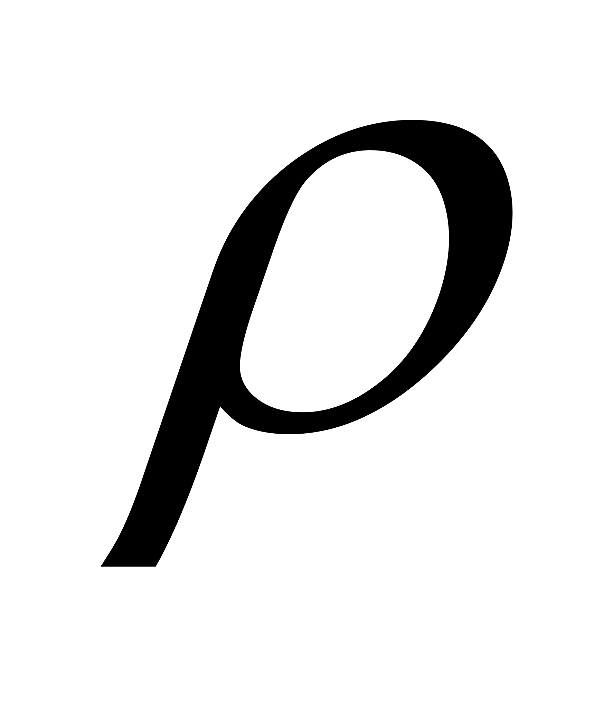
In base a questa formula possiamo calcolare il valore medio:On the basis of this formula we can compute the mean value:
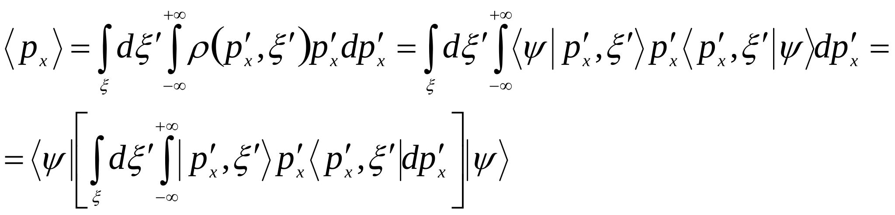
ma noi sappiamo anche chebut we also know that

dove 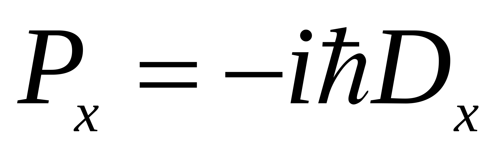
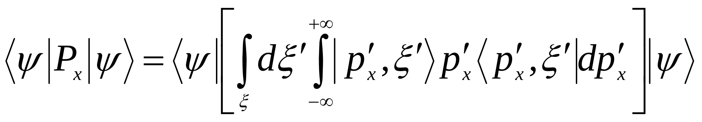
visto che questa equazione è vera per ogni  possiamo dedurre chesince this equation is true for every , we can deduce that
possiamo dedurre chesince this equation is true for every , we can deduce that
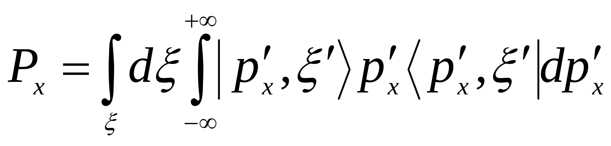
Questa formula ci mostra che l’operatore  “contiene in se” gli autostati che stiamo cercando
“contiene in se” gli autostati che stiamo cercando  , quindi dobbiamo trovare il modo di tirarli fuori.This formula shows us that the operator “contains within itself” the eigenstates we are looking for , so we must find a way to extract them.
, quindi dobbiamo trovare il modo di tirarli fuori.This formula shows us that the operator “contains within itself” the eigenstates we are looking for , so we must find a way to extract them.
Proviamo a moltiplicare l’operatore  per un autostato
per un autostato  :Let us try to multiply the operator by an eigenstate :
:Let us try to multiply the operator by an eigenstate :

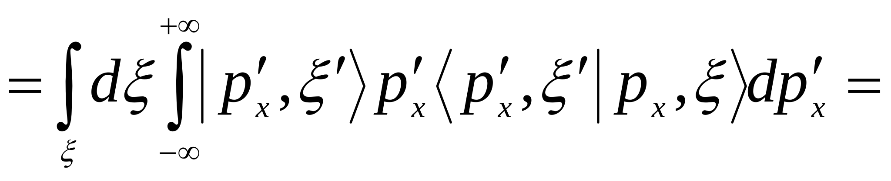
Osservando che 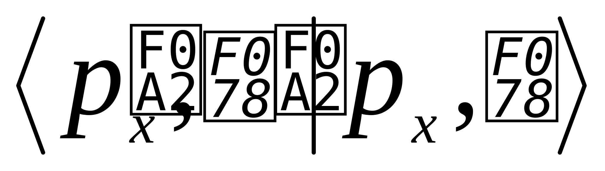 , all’interno dell’integrale possiamo sostituire il termine “centrale” con
, all’interno dell’integrale possiamo sostituire il termine “centrale” con  .Observing that is zero if , within the integral we can replace the “central” term with .
.Observing that is zero if , within the integral we can replace the “central” term with .
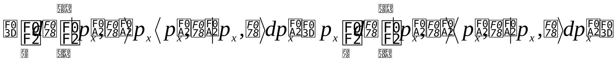
essendo 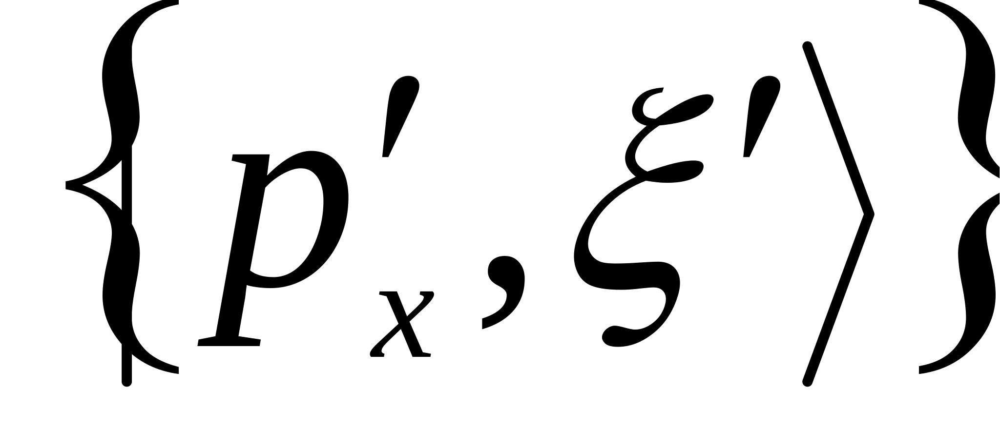 le componenti del vettore
le componenti del vettore  nella base
nella base  , l’integrale non è altro che la combinazione che esprime il vettore
, l’integrale non è altro che la combinazione che esprime il vettore  nella base are the components of the vector in the basis , the integral is nothing but the combination that expresses the vector in the basis , hence we have found
nella base are the components of the vector in the basis , the integral is nothing but the combination that expresses the vector in the basis , hence we have found
cioè i vettori di stato  sono “autovettori” dell’operatore
sono “autovettori” dell’operatore  . Questo è il motivo per cui gli autostati vengono chiamati così.that is, the state vectors are “eigenvectors” of the operator . This is the reason why the eigenstates are so called.
. Questo è il motivo per cui gli autostati vengono chiamati così.that is, the state vectors are “eigenvectors” of the operator . This is the reason why the eigenstates are so called.
A questo punto abbiamo determinato un quadro molto chiaro, alla grandezza osservabile  è associato un operatore
è associato un operatore  , gli autostati della grandezza
, gli autostati della grandezza  sono associati agli autovettori dell’operatore
sono associati agli autovettori dell’operatore  , mentre i valori che può assumere la grandezza
, mentre i valori che può assumere la grandezza  sono gli autovalori dell’operatore
sono gli autovalori dell’operatore  .At this point we have determined a very clear picture: with the observable quantity is associated an operator , the eigenstates of the quantity are associated with the eigenvectors of the operator , while the values that the quantity can take are the eigenvalues of the operator .
.At this point we have determined a very clear picture: with the observable quantity is associated an operator , the eigenstates of the quantity are associated with the eigenvectors of the operator , while the values that the quantity can take are the eigenvalues of the operator .
Se risolviamo il problema agli autovaloriIf we solve the eigenvalue problem

determiniamo gli autostati dell’operatore  ed applicando il postulato quattro riusciamo a risolvere il nostro problema, cioè riusciamo a determinare la distribuzione di probabilità per la quantità di moto.we determine the eigenstates of the operator and, applying postulate four, we manage to solve our problem, that is we manage to determine the probability distribution for momentum.
ed applicando il postulato quattro riusciamo a risolvere il nostro problema, cioè riusciamo a determinare la distribuzione di probabilità per la quantità di moto.we determine the eigenstates of the operator and, applying postulate four, we manage to solve our problem, that is we manage to determine the probability distribution for momentum.
Ora generalizziamo i risultati raggiunti per la quantità di moto con il seguente importantissimo teorema:Now we generalise the results obtained for momentum with the following very important theorem:
Ad ogni grandezza fisica 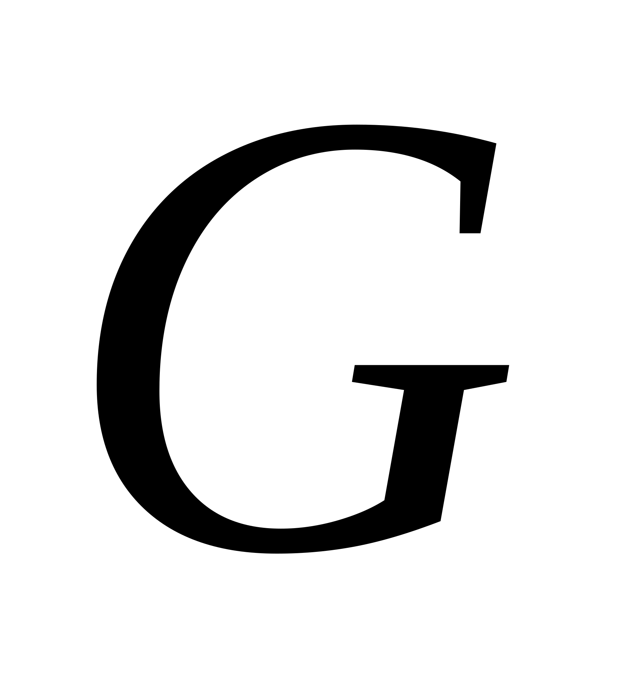 è associato un operatore hermitiano is associated a Hermitian operator such that:
è associato un operatore hermitiano is associated a Hermitian operator such that:
Il valore medio della grandezza 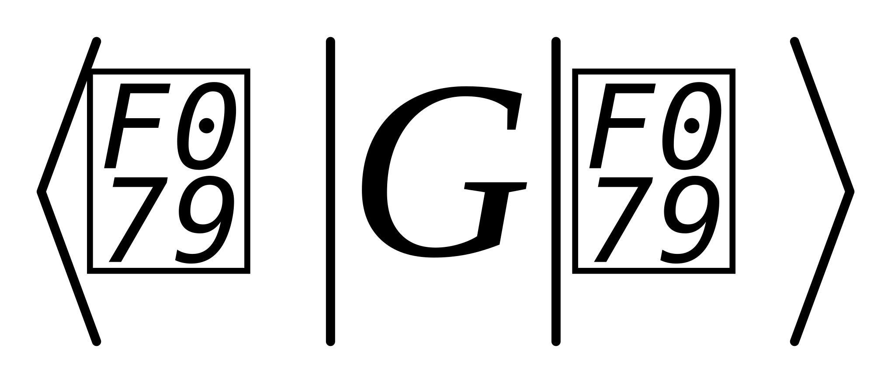 , quando il sistema si trova in uno stato rappresentato dal ket
, quando il sistema si trova in uno stato rappresentato dal ket  , è dato dalla formula , when the system is in a state represented by the ket , is given by the formula ;
, è dato dalla formula , when the system is in a state represented by the ket , is given by the formula ;
Gli autovalori dell’operatore  sono tutti i possibili valori che può assumere la grandezza
sono tutti i possibili valori che può assumere la grandezza  , e gli autovettori associati ad un autovalore
, e gli autovettori associati ad un autovalore  rappresentano gli autostati della grandezza
rappresentano gli autostati della grandezza  nei quali si ottiene con certezza il valore .The eigenvalues of the operator are all the possible values that the quantity can take, and the eigenvectors associated with an eigenvalue represent the eigenstates of the quantity in which the value is obtained with certainty.
nei quali si ottiene con certezza il valore .The eigenvalues of the operator are all the possible values that the quantity can take, and the eigenvectors associated with an eigenvalue represent the eigenstates of the quantity in which the value is obtained with certainty.
Dimostrazione:Proof:
Consideriamo una grandezza  , siano
, siano  i possibili valori della grandezza , e siano i ket rappresentativi degli autostati della grandezza
i possibili valori della grandezza , e siano i ket rappresentativi degli autostati della grandezza  e del set di grandezze ausiliarie
e del set di grandezze ausiliarie  , allora l’operatoreLet us consider a quantity , let be the possible values of the quantity , and let be the kets representing the eigenstates of the quantity and of the set of auxiliary quantities ; then the operator
, allora l’operatoreLet us consider a quantity , let be the possible values of the quantity , and let be the kets representing the eigenstates of the quantity and of the set of auxiliary quantities ; then the operator

è hermitiano e soddisfa i due punti dell’asserto. Per verificarlo basta seguire esattamente gli stessi passi che abbiamo seguito per l’operatore  .is Hermitian and satisfies the two points of the statement. To verify it, one need only follow exactly the same steps that we followed for the operator .
.is Hermitian and satisfies the two points of the statement. To verify it, one need only follow exactly the same steps that we followed for the operator .
Grandezze compatibili e grandezze incompatibili.Compatible quantities and incompatible quantities.
Supponiamo di voler eseguire una misura contemporanea di e di  . Dopo una tale misura il sistema si dovrebbe portare in un autostato simultaneo delle grandezze
. Dopo una tale misura il sistema si dovrebbe portare in un autostato simultaneo delle grandezze  e
e  , ed il ket di stato risultante dovrebbe essere un autoket degli operatori e
, ed il ket di stato risultante dovrebbe essere un autoket degli operatori e  , ma questo è impossibile. Infatti indicando con un ipotetico autostato delle grandezze
, ma questo è impossibile. Infatti indicando con un ipotetico autostato delle grandezze  ,
,  e di un opportuno set di grandezze ausiliarie
e di un opportuno set di grandezze ausiliarie  , abbiamoSuppose we want to perform a simultaneous measurement of and of . After such a measurement the system should settle into a simultaneous eigenstate of the quantities and , and the resulting state ket should be an eigenket of the operators and , but this is impossible. Indeed, denoting by a hypothetical eigenstate of the quantities , and of a suitable set of auxiliary quantities , we have
, abbiamoSuppose we want to perform a simultaneous measurement of and of . After such a measurement the system should settle into a simultaneous eigenstate of the quantities and , and the resulting state ket should be an eigenket of the operators and , but this is impossible. Indeed, denoting by a hypothetical eigenstate of the quantities , and of a suitable set of auxiliary quantities , we have
da cuifrom which
ma noi sappiamo che  , dunque abbiamobut we know that , hence we have
, dunque abbiamobut we know that , hence we have

Concludiamo che l’autoket simultaneo degli operatori  e
e  non può esistere perché dovrebbe essere per forza nullo. Quindi non può essere possibile eseguire una misura precisa e contemporanea delle grandezze
non può esistere perché dovrebbe essere per forza nullo. Quindi non può essere possibile eseguire una misura precisa e contemporanea delle grandezze  e , mentre invece è perfettamente possibile in altri casi, ad esempio con le grandezze
e , mentre invece è perfettamente possibile in altri casi, ad esempio con le grandezze  , .We conclude that the simultaneous eigenket of the operators and cannot exist because it would necessarily be zero. Therefore it is not possible to perform a precise and simultaneous measurement of the quantities and , whereas it is perfectly possible in other cases, for example with the quantities , .
, .We conclude that the simultaneous eigenket of the operators and cannot exist because it would necessarily be zero. Therefore it is not possible to perform a precise and simultaneous measurement of the quantities and , whereas it is perfectly possible in other cases, for example with the quantities , .
Prima di procedere con lo studio generalizzare al caso continuo la formula che abbiamo dimostrato alla fine del primo paragrafo:Before proceeding with the study, let us generalise to the continuous case the formula we proved at the end of the first paragraph:
se  è un insieme completo di grandezze osservabili, e
è un insieme completo di grandezze osservabili, e  è l’insieme ortonormale degli “autoket” associati ai suoi autostati, allora abbiamoif is a complete set of observable quantities, and is the orthonormal set of the “eigenkets” associated with its eigenstates, then we have
è l’insieme ortonormale degli “autoket” associati ai suoi autostati, allora abbiamoif is a complete set of observable quantities, and is the orthonormal set of the “eigenkets” associated with its eigenstates, then we have
Per chiarezza ripetiamo la dimostrazione: se moltiplichiamo l’integrale a sinistra per un generico ket  abbiamoFor clarity we repeat the proof: if we multiply the integral on the left by a generic ket we have
abbiamoFor clarity we repeat the proof: if we multiply the integral on the left by a generic ket we have
essendo le componenti del vettore  nella base abbiamosince are the components of the vector in the basis , we have
nella base abbiamosince are the components of the vector in the basis , we have
che dovendo essere vera per ogni  , prova l’asserto.which, having to be true for every , proves the statement.
, prova l’asserto.which, having to be true for every , proves the statement.
Momento angolare.Angular momentum.
Nella Fisica Classica il momento angolare rispetto ad un polo O è definito dalla formulaIn Classical Physics the angular momentum with respect to a pole O is defined by the formula
Nello schema della Meccanica Quantistica la grandezza momento angolare dovrà essere coerente con la definizione classica.In the scheme of Quantum Mechanics the angular-momentum quantity must be consistent with the classical definition.
Dunque per i valori medi dovremo avere:Hence for the mean values we must have:
Per semplificare il lavoro ci conviene considerare le singole componenti, inoltre per non appesantire le notazioni ometteremo il pedice O.To simplify the work it is convenient to consider the individual components; moreover, to avoid burdening the notation, we will omit the subscript O.
Per le componenti abbiamoFor the components we have
Consideriamo la componente . Per avere accordo tra la Meccanica Classica e la Meccanica Quantistica dovremo avere:Let us consider the component . To have agreement between Classical Mechanics and Quantum Mechanics we must have:
Concentriamo l’attenzione sul termine Let us focus attention on the term

Indichiamo con un autoket rappresentativo di un autostato simultaneo delle grandezze  ,
,  e del set di grandezze ausiliarie
e del set di grandezze ausiliarie  .We denote by an eigenket representing a simultaneous eigenstate of the quantities , and of the set of auxiliary quantities .
.We denote by an eigenket representing a simultaneous eigenstate of the quantities , and of the set of auxiliary quantities .
Usando questi ket abbiamoUsing these kets we have
integrando rispetto alle variabili abbiamointegrating with respect to the variables we have
Quindi per il valore medio abbiamoHence for the mean value we have
ricordando che possiamo scrivererecalling that we can write

essendosince
abbiamo la formula finalewe have the final formula
I passaggi sono analoghi per tutti gli altri termini, quindi otteniamo:The steps are analogous for all the other terms, so we obtain:
Dunque alla grandezza , per esempio, associamo l’operatore , e analogamente per le altre.Thus with the quantity , for example, we associate the operator , and analogously for the others.
A questo punto abbiamo trovato un operatore che ci dà una formula per calcolare il valore medio del momento angolare nel formalismo della Meccanica Quantistica e che è in accordo con la formula della Meccanica Classica.At this point we have found an operator that gives us a formula to compute the mean value of angular momentum in the formalism of Quantum Mechanics and that agrees with the formula of Classical Mechanics.
Questo stesso operatore ci può dare tutti i possibili valori che può assumere il momento angolare e gli autostati corrispondenti; per ottenere queste informazioni basta risolvere il problema agli autovaloriThis same operator can give us all the possible values that angular momentum can take and the corresponding eigenstates; to obtain this information it suffices to solve the eigenvalue problem
L’energia.Energy.
Come ultima grandezza di studio consideriamo l’energia.As the last quantity of study we consider energy.
Nel formalismo della Meccanica Classica, per una particella carica in un potenziale elettrico, abbiamo l’energiaIn the formalism of Classical Mechanics, for a charged particle in an electric potential, we have the energy
quindi dobbiamo cercare un operatore che ci dia un valore medio coerente con questa formula classicaso we must look for an operator that gives us a mean value consistent with this classical formula
Ma noi un operatore simile lo abbiamo già, ed è H, infattiBut we already have such an operator, namely H, indeed
Quindi se vogliamo trovare i valori che può assumere l’energia, e gli autostati in cui si porta la particella dopo una misura dell’energia, allora dobbiamo risolvere il seguente problema agli autovalori:Therefore, if we want to find the values that energy can take, and the eigenstates into which the particle settles after a measurement of energy, then we must solve the following eigenvalue problem:
Livelli energetici per l’atomo di idrogeno.Energy levels for the hydrogen atom.
L’atomo di idrogeno è costituito da un nucleo con carica pari a quella dell’elettrone, e da un unico elettrone orbitante.The hydrogen atom consists of a nucleus with charge equal to that of the electron, and a single orbiting electron.
Per determinare il moto dell’elettrone attorno al nucleo si deve risolvere l’equazione di Schrödinger, mentre se si vogliono determinare i valori che può assumere l’energia dell’atomo, basta risolvere il problema agli autovalori che abbiamo posto nel precedente paragrafo nel caso in cui abbiamo un potenziale columbiano  .To determine the motion of the electron around the nucleus one must solve the Schrödinger equation, whereas if one wants to determine the values that the energy of the atom can take, it suffices to solve the eigenvalue problem we posed in the previous paragraph in the case where we have a Coulomb potential .
.To determine the motion of the electron around the nucleus one must solve the Schrödinger equation, whereas if one wants to determine the values that the energy of the atom can take, it suffices to solve the eigenvalue problem we posed in the previous paragraph in the case where we have a Coulomb potential .
In questa scheda non vogliamo risolvere questi complicati problemi matematici, e rimandiamo lo svolgimento ad una scheda futura, tuttavia vogliamo anticipare i risultati per i livelli energetici:In this card we do not wish to solve these complicated mathematical problems, and we defer the treatment to a future card; nevertheless we wish to anticipate the results for the energy levels:
L’energia può assumere solo dei valori discreti dati dalla formulaEnergy can take only discrete values given by the formula